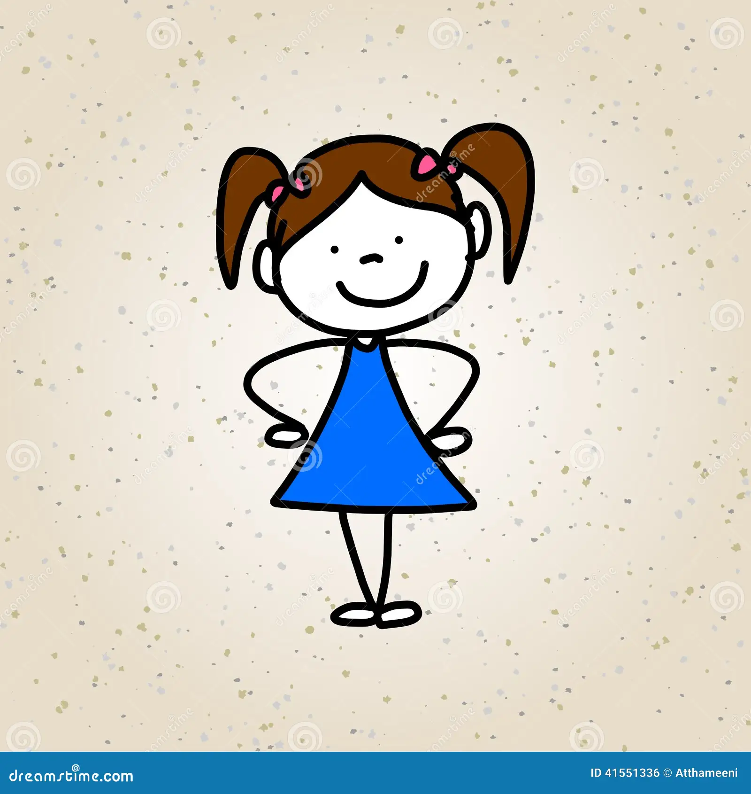
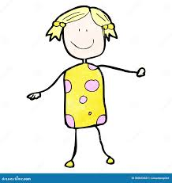

. Laura, 32 ans – L’empathique Maman de deux enfants, Laura a toujours ressenti une profonde empathie pour les couples en difficulté face à la parentalité. Passionnée par le domaine médical, elle a vécu sa grossesse pour autrui avec une grande sérénité. Pour elle, porter un enfant pour une autre famille est un acte de solidarité qui donne du sens à sa vie. Toujours souriante, douce et patiente, elle a tissé avec les parents d’intention un lien sincère qui perdure encore aujourd’hui.
Samira, 36 ans – La déterminée Sportive et énergique, Samira aime relever des défis. Après avoir accompagné sa sœur dans un long parcours d’infertilité, elle a pris la décision d’aider d’autres familles. Très organisée, elle a mené sa grossesse avec sérieux, entourée d’une équipe médicale qu’elle a suivie avec rigueur. Pour Samira, une grossesse sereine commence par une communication ouverte et honnête, n principe qu’elle a appliqué du début à la fin.
Élise, 29 ans – La bienveillante Auxiliaire de puériculture, Élise a toujours été entourée d’enfants. Elle a choisi la gestation pour autrui pour offrir ce bonheur à un couple ne pouvant porter un enfant. Très attentive au bien-être de chacun, elle a veillé à créer une relation douce et harmonieuse avec les futurs parents. Sa sensibilité et son écoute ont transformé ce parcours en une aventure humaine pleine de respect et d’émotions partagées.
Nadia, 40 ans – La généreuse Maman de trois adolescents, Nadia est connue dans son entourage pour sa générosité et son esprit de famille. Après avoir élevé ses propres enfants, elle a souhaité aider ceux qui rêvaient de devenir parents. Son expérience et sa maturité ont été un soutien précieux pour le couple qu’elle a accompagné. Pour elle, être mère porteuse est avant tout un engagement de cœur, un don de soi qu’elle considère comme une évidence.